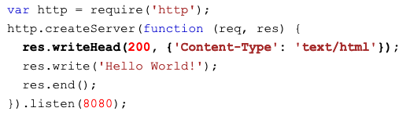
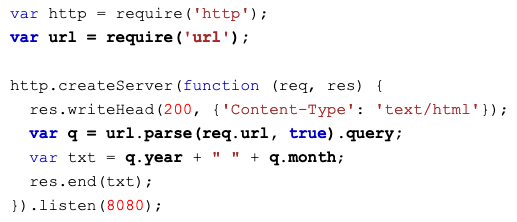

Node.js uses asynchronous programming!
The way that Node.js handles a file request:
Can generate dynamic page content, create, open, read, write, delete, and close files on the server, can collect from data, can add, delete, modify data in your database.
Node.js must be initiated in the Command Line Interface program of your computer.
You should go to the path where your file is
To initiate the file that you create, you should use path.../node myfirst.js
It is important to know that your computer will work as the server, anyone who try to access to the port 8080 will get a "Hello World!" message, (In this example only)
Consider the modules to be the same as JavaScript libraries. A set of functions you want to include in your application.
It is possible to use some modules without any kind of extra installation. You can look them in the next link
To include a module, it is necessary to use require() function with the name of the module.
var http = require('http');
Using this, the application has access to the HTTP module, and is able to create a server.
It is possible to create your own modules, and then easy include them in your applications. To do it is necessary to use the keyword exports:
exports.myDateTime = function () { return Date(); };
To include oyur module, is necessary to use the same notation like if you are trying to use a normal module:
var dt = require('/myfirstmodule');
You should use the path where your module is.
This module allows to transmit data using HTTP.
The HTTP module can create an HTTP server that listens to server ports and gives a response back to the client.
You can use the createServer() method to create an HTTP server.
If the response fromt the HTTP server is supposed to be displayed as HTML, you should include an HTTP header with the correct content type:

The req argument in the method allow to see the url where you are at the moment, for example, if you are in localhost:8080/summer, the req.url will show the word /summer.
It is also possible to split some information from the Query, an example:

So if you put: http://localhost:8080/?year=2017&month=July, the result will be 2017 July
The Node.js file system module allows you to work with the file system on your computer.
To include this module: var fs = require('fs');
Some common use for this module:
The method fs.readFile() is used to read files on your computer.
If you have a .html file, you can use the Node.js module to read it an show it.